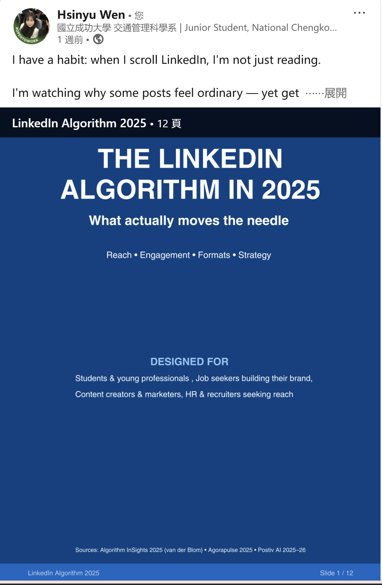

01
B2B Strategy & MarTech
Tachiz LinkedIn Strategy & Tool
為 Tachiz 進行的 B2B 內容行銷解方，組內策略提案獲 100% 採用。為突破行銷人力預算限制，我開發了一套網頁系統，幫助團隊快速產出符合 LinkedIn 2026 演算法的輪播圖。
為驗證成效，我親自製作《LinkedIn Algorithm 2025》輪播圖實測，發布 3 天內即獲 264 次真實曝光、觸及 131 位專業會員並成功轉換新關注者。
02
Social Campaign
Copilot for Students
將 Microsoft Copilot 的硬核技術轉譯為 Gen Z 學生友善的語言。以 Instagram 輪播圖形式，視覺化「大學生必備的 3 個 Copilot 神技」，展現跨平台的社群敘事與文案轉譯能力。


03
Visual Design & Translation
Azure in Plain Language
面試情境題解答：在 60 秒內讓非技術背景的利害關係人（如採購總監）理解 Azure 雲端架構。透過高度視覺化的資訊圖表，展現將複雜科技產品降維打擊的企劃轉譯力。

04
Brand Localization
Holiday Campaign
遵循微軟嚴謹的品牌視覺規範 (Brand Guidelines)，設計原創的台灣節慶社群貼文（中秋節與農曆新年）。搭配精準的中英雙語文案，展現跨文化與本土化社群營運實力。